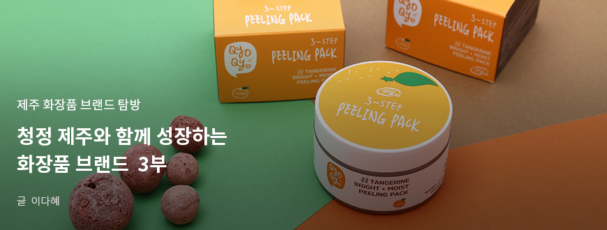
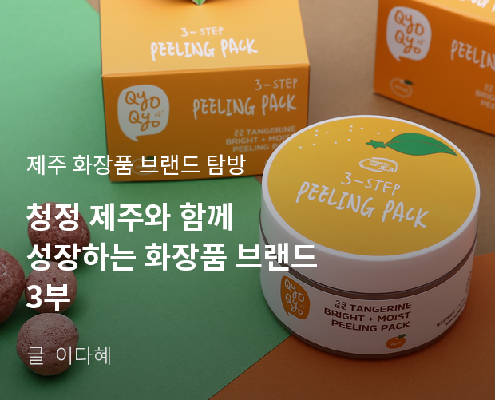
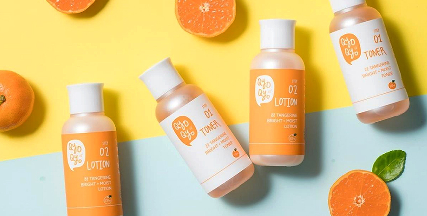
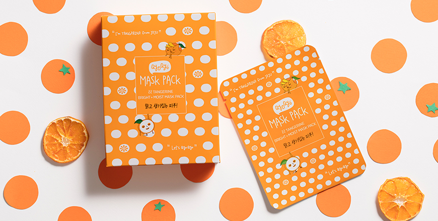
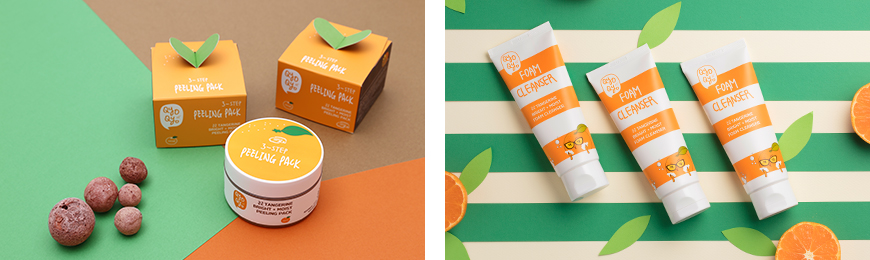

기획취재콘텐츠
- Home
- 제주라이프
- 기획취재콘텐츠
청정 제주와 함께 성장하는 화장품 브랜드 3부새로운 글



제주 감귤에 집중하다. 쿄쿄
청정 제주의 대표 작물 감귤이 화장품으로 재탄생했다. 제주 태생 자연주의 화장품 브랜드 ‘쿄쿄 QyoQyo’(이하 쿄쿄)는 화장품 원료 중 감귤피에 집중해 쿄쿄 탠저린 기초 화장품 라인과 선블록, 폼 클렌징 및 바디 제품을 개발 및 출시했다.
제주 감귤은 제주를 대표하는 작물로 과수 자체는 물론 감귤청, 감귤파이 등 가공품 제작에도 적극적으로 활용되고 있다. 쿄쿄는 감귤의 화장품 원료로서의 효능에 집중했다. 감귤은 비타민C가 풍부해 항산화, 미백, 항균에 탁월한 귤은 향장 제품으로 활용하기 좋은 화장품 원료다. 특히 다른 과일에서 쉽게 찾아볼 수 없는 헤스페리딘(Hesperidin)이 제주 감귤피에 다량 함유되어 있는데, 이 헤스피리딘은 피부 탄력 유지에 탁월한 효과를 보여준다.

- 쿄쿄 텐저린 브라이트+모이스트 토너, 쿄쿄 텐저린 브라이트+모이스트 로션 ⓒ쿄쿄 -

- 쿄쿄 텐저린 브라이트+모이스트 마스크팩 ⓒ쿄쿄 -
쿄쿄 텐저린 기초 화장품 라인은 감귤피 추출물을 베이스로 장미, 코스모스, 쟈스민, 백합, 꽃창포, 무궁화, 연꽃 7가지 꽃추출물을 더해 보습효과를 극대화하고 감초 성분으로 진정 효과를 더했다. 쿄쿄 텐저린 브라이트+모이스트 필링 팩은 노폐물과 각질 흡착 효과가 뛰어난 화산송이와 브라이트닝에 좋은 애기 감귤, 보습과 진정 기능이 있는 제주조릿대와 알로에 등 식물 추출물을 조합해 클렌징은 물론 미백 및 보습 효과까지 한 번에 잡았다.

- (좌)쿄쿄 텐저린 브라이트+모이스트 필링 팩, (우)쿄쿄 텐저린 브라이트+모이스트 폼 클렌저 ⓒ쿄쿄 -
제주 대표 산물인 감귤의 귤피는 실제 한의원에서 피부 트러블의 처방 약에 포함될 정도로 항염, 항산화, 미백 작용이 탁월합니다. 쿄쿄에서는 이러한 귤피의 효능에 집중해 민감한 여성의 피부에 맞는 기초 화장품 라인을 개발했습니다.
2016년 탄생한 브랜드 ‘쿄쿄’는 비교적 역사가 짧은 신생 브랜드지만, 수출이 80%에 달할 정도로 국경을 넘어 K-뷰티 글로벌 팬들의 화장대를 점령 중이다. 네덜란드, 스웨덴, 독일, 폴란드, 미국, 중국, 일본, 러시아, 대만, 싱가포르 등 아시아는 물론 유럽과 미국까지 다양한 국가의 온오프라인 매장에서 쿄쿄 제품이 판매된다. 제주 신라호텔과 켄싱턴 호텔 등 유명 호텔과 리조트 기프트샵과 제주 및 인천국제공항 면세점에서도 쿄쿄 텐저린 라인은 활발하게 판매 중이며, 국내외 관광객에게 큰 인기를 얻고 있다.
- 쿄쿄 텐저린 브라이트+모이스트 기프트 세트 ⓒ쿄쿄 -
유네스코 3관왕 청정섬 제주에서 온 브랜드라는 점, 제주의 주요 산물인 감귤에서 브랜드 콘셉트와 스토리가 시작되는 점 등이 세계 각국의 바이어에게 신선한 이미지를 전하고 있습니다. 또한, 최근 이슈가 되고 있는 공해와 기후 변화로 자연 친화적인 원료와 브랜드가 각광받고 있습니다. 이러한 흐름에서 청정섬 제주는 매우 매력적인 곳으로 주목받고 있습니다. 뷰티 산업의 트렌드인 자연주의와 제주, 감귤이라는 원료까지 더해지며 쿄쿄 브랜드와 제품에 높은 관심과 좋은 반응이 이어지고 있습니다.
K-뷰티 한류 계보를 이어 가고 있는 브랜드 쿄쿄는 제주 감귤 귤피 추출물을 베이스 성분으로 라인업을 더해갈 예정이다. 10대와 20대를 겨냥한 쿄쿄 걸(girl)라인을 시작으로 2020년 하반기에는 3-40대 여성에게 맞는 제품을 개발해 쿄쿄 미즈(Ms) 라인을 계획하고 있다. 또한, 완숙과를 주요 원료로 제품을 개발했으나 향후에는 미숙과(풋귤)라인으로 제품을 라인업해 나갈 계획이다. 여기에 제주의 다양한 식물성 화장품 원료를 결합한 다양한 화장품 제품을 선보이며 ‘자연주의’와 ‘식물성 원료’ 키워드에 맞는 뷰티 브랜드로 성장하고자 한다.
다음글